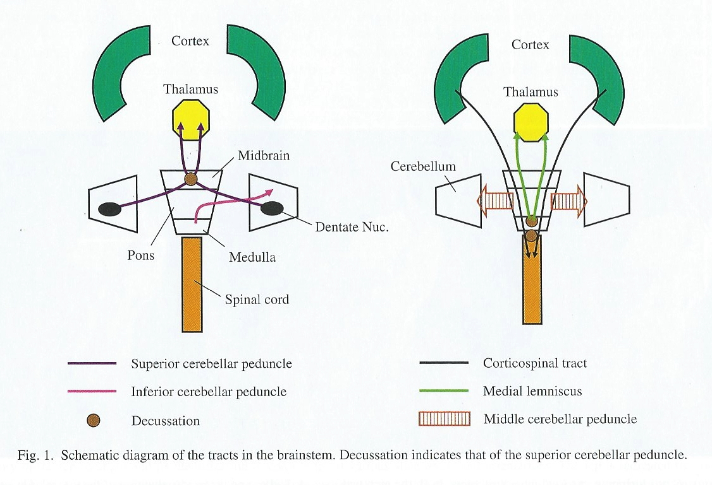
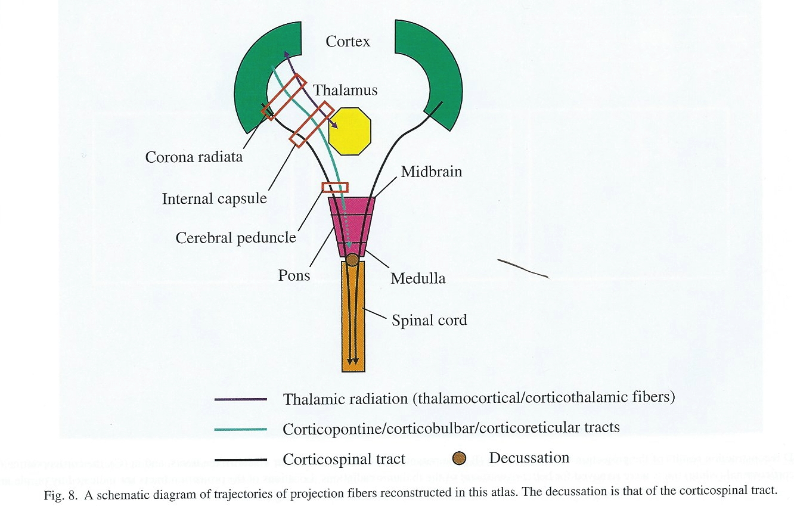
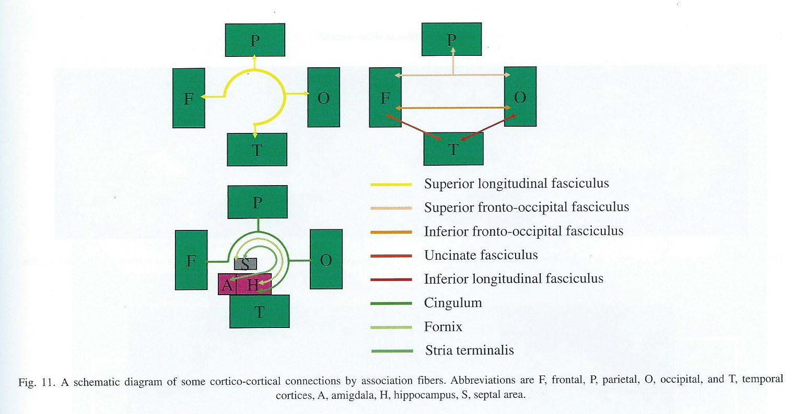

2019-09-10 11:00:00
Prelude
Today’s Topics
- Web resources
- Wrap up on brain anatomy
- White matter tracts
- The peripheral nervous system
Web resources
Organization of the brain
| Major division | Ventricular Landmark | Embryonic Division | Structure |
|---|---|---|---|
| Forebrain | Lateral | Telencephalon | Cerebral cortex |
| Basal ganglia | |||
| Hippocampus, amygdala | |||
| Third | Diencephalon | Thalamus | |
| Hypothalamus | |||
| Midbrain | Cerebral Aqueduct | Mesencephalon | Tectum, tegmentum |
Organization of the brain
| Major division | Ventricular Landmark | Embryonic Division | Structure |
|---|---|---|---|
| Hindbrain | 4th | Metencephalon | Cerebellum, pons |
| – | Mylencephalon | Medulla oblongata |
Cerebral Cortex
Cerebral hemispheres
Groove (sulcus or sulci)
Bumps (gyrus or gyri)
Grey vs.white matter
Lobes
Cortical Gyri – Lateral

Cortical Gyri – Medial

Gray vs. White Matter

Lobes of the cerebral cortex
Frontal
Temporal
Parietal
Occipital
Bones of the skull

Lobes

Landmarks of the cortex
Longitudinal fissure

Lateral sulcus/fissure

Central sulcus

Frontal lobe
Where is it?
- Anterior to central sulcus
- Superior to lateral fissure
- Dorsal to temporal lobe
Lobes of the Cerebral Cortex

Frontal lobe
What does it do?
- Primary motor cortex (M1)
- Supplementary motor cortex
- Frontal eye fields (FEF)
- Prefrontal cortex
- Planning, problem solving, working memory…?
Frontal lobe
What does it do?
- Basal forebrain
- Nucleus accumbens (NAcc), part of ventral striatum
- Anterior cingulate cortex (ACC)
- Primary olfactory cortex
Cingulate Gyrus

Inferior Frontal Gyrus (IFG)

Middle Frontal Gyrus (MFG)

Temporal lobe
Where is it?
- Ventral to frontal, parietal lobes
- Inferior to lateral fissure
Temporal lobe
What does it do?
- Primary auditory cortex
- Object, face recognition
- Storage of memories about events, objects
- Amygdala, hippocampus
Inferior Temporal Gyrus (ITG)

Entorhinal Cortex (ER)

Parietal lobe
Where is it?
- Caudal to frontal lobe
- Dorsal to temporal lobe
- Posterior to central sulcus
What does it do?
- Primary somatosensory cortex
- Perception of spatial relations, action planning
Inferior Parietal Lobule

Superior Parietal Lobule

Occipital lobe
Where is it?
- Caudal to parietal & temporal lobes
What does it do?
- Primary visual cortex (V1)
Visual Cortex

Insular cortex (insula)
Where is it?
- medial to temporal lobe
- deep inside lateral fissure
Insula

Insula
What does it do?
- Primary gustatory cortex
- self-awareness, interpersonal experiences, motor control
Brodmann Areas
- Korbinian Brodmann
- Cytoarchitectonic (cellular architecture) differences in cerebral cortex

Brodmann Areas

Brodmann Areas

Spinal cord
Rostral/Caudal axis
- Spinal column w/ vertebrae
- Cervical (8), thoracic (12), lumbar (5), sacral (5), coccygeal (1)
- Spinal segments & 31 nerve pairs
- Cauda equina

Spinal cord
Organization of the spinal cord
- Dorsal/Ventral
- Dorsal root (sensory)
- Ventral root (mostly motor)
- Grey (interior) vs. white matter (exterior)

Organization of the PNS
Somatic division
Autonomic
Cranial nerves
Spinal nerves
Cranial nerves
- Afferents (input), efferents (output), or mixed
- Innervate head and neck
- Olfactory (I), optic (II), (VIII) auditory, vagus (X), etc.
- Spinal nerves
Cranial nerves

Major white matter pathways
Brainstem
Projection fibers
Association fibers
Commissural fibers

(Oishi, Faria, Zijl, & Mori, 2010), Chapter 3, Figure 1.
Brainstem projections
- Corticospinal tract (descending/efferent)
- Dorsal column/medial lemniscus (ascending/afferent)
- Superior/inferior cerebellar peduncles (from/to cerebellum)

(Oishi et al., 2010), Chapter 3, Figure 8.
Projection fiber tracts
- Internal capsule
- Thalamic radiation
- Cortico-{pontine, bulbar, reticular} tracts

(Oishi et al., 2010), Chapter 3, Figure 11.

(Oishi et al., 2010), Chapter 3, Figure 11.
Cortical white matter tracts
- Superior/inferior longitudinal fasciculus
- Arcuate fasciculus part of sup. long. f.
- Superior/inferior fronto-occipital fasciculus
- Cingulum, fornix (hyp-hip), stria terminalis (hyp-amyg)
Commissural fibers
- Corpus callosum
- Anterior commissure (AC)
- Posterior commissure (PC)


Anterior, Posterior Commissures

Autonomic nervous system
- CNS & PNS components
- Controls “vegetative functions”
- Limited voluntary control
- Two divisions
- Sympathetic
- Parasympathetic
ANS

{kind=link}
{kind=link}
Sympathetic division
- Prepares body for action
- “Fight or flight”
- Spinal cord
- ganglion chain along spinal column to End organs
- NTs
- Preganglionic: ACh
- Post: NE
Parasympathetic division
- “Around” sympathetic
- Restorative function
- “Rest & digest”
- Spinal cord (or Vagus n.) -> ganglia near end organs -> end organ
- NT: ACh
References
Oishi, K., Faria, A. V., Zijl, P. C. van, & Mori, S. (2010). MRI atlas of human white matter. Academic Press.